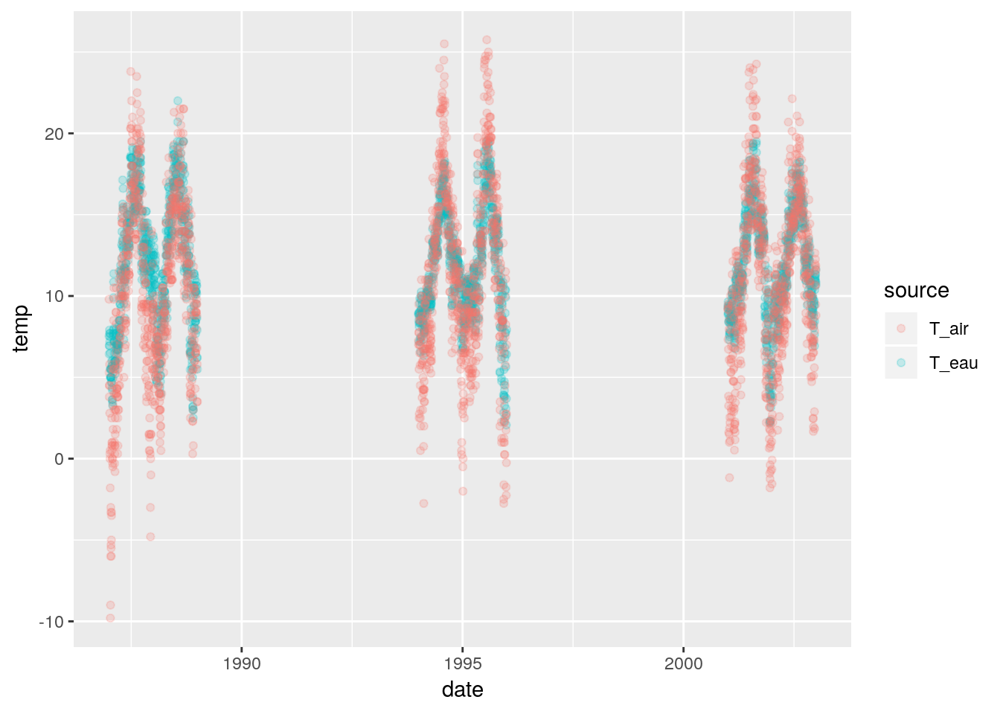
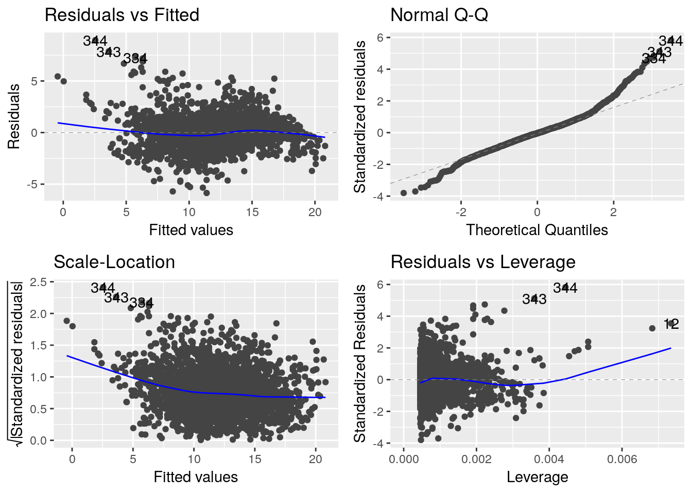

Stat 4 Halieutes
Stat 4 HalieutesRappels de statisique élémentaire
Modèle de régression simple
Le fichier data/T_Oir_StHilaire_87_02.txt contient des relevés journaliers de la température de l’eau et de la température de l’air dans l’Oir, un petit fleuve côtier de Basse Normandie. Données journalières. On se pose la question du lien entre la température de l’eau et la température de l’air.
Visualisation des données de température
Une première étape essentielle consiste à visualiser les données. Proposer un code permettant de produire le graphique ci dessous~:
Transformation d’e la date en jours calendaires’une chaîne de caractères en dates.
df_temp <- df_temp %>% mutate(date_posixct = as.POSIXct(strptime(df_temp$date, format = "%d/%m/%Y"))) 
Un modèle de régression simple
Le modèle de la régression simple s’écrit mathématiquement sous la forme suivante :
\[ Y_k = \alpha + \beta x_k + E_k, \quad E_k \overset{i.i.d}{\sim}\mathcal{N}(0, \sigma^2),\] où
- \(Y_k\) désigne la température de l’eau de la k$^{} mesure,
- \(x_k\) désigne la température de l’air de la k$^{} mesure,
- \(E_k\) est un terme d’écart au modèle pour la mesure \(k\), on suppose qu’il suit une loi normale centrée de variance inconnue \(\sigma^2\),
- \(\alpha\) est le paramètre inconnu qui ajuste l’ordonnée à l’origine,
- \(\beta\) est le paramètre inconnu qui règle le lien entre température de l’air et température de l’eau.
Estimation des paramètres
L’estimation consiste à déterminer le choix des paramètre \(\alpha\) et \(\beta\) les plus pertinents. Une méthode générique d’estimation des paramètres d’un modèle statistique, consiste à optimiser une fonction nommée la vraisemblance, on le verra plus tard.
Dans un premier temps, on cherche à trouver la droite d’équation \(y=a +bx\) qui résume au mieux les données, i.e on cherche à minimiser l’écart entre nos observations \(y_i\) et la prédiction par le modèle \(\alpha + \beta x_i\), ce qui revient à trouver le minimum de la fonction
\[MCO(\alpha, \beta; \boldsymbol{y},\boldsymbol{x}) = \sum_{i=1}^{n} \{y_i - (\alpha + \beta x_i) \}^2. \]
La commande lm de R fait le travail, dans la commande suivante :
lm_eau_air <- lm(T_eau ~ T_air, data=df_temp)Avant toute analyse, il est indispensable de discuter les hypothèses du modèle. Il est pour cela utile de regarder les graphiques de diagnostic
autoplot(lm_eau_air, data=df_temp, colour='annee')
On peut obtenir les coefficients estimés du modèle grâce à la commande :
coef(lm_eau_air)## (Intercept) T_air
## 5.4149067 0.5976255On a non seulement ces valeurs mais les tests de nullité des paramètre associés grâce à la commande :
summary(lm_eau_air)##
## Call:
## lm(formula = T_eau ~ T_air, data = df_temp)
##
## Residuals:
## Min 1Q Median 3Q Max
## -5.8562 -0.9267 -0.0471 0.7730 8.9537
##
## Coefficients:
## Estimate Std. Error t value Pr(>|t|)
## (Intercept) 5.414907 0.075402 71.81 <2e-16 ***
## T_air 0.597626 0.006115 97.72 <2e-16 ***
## ---
## Signif. codes: 0 '***' 0.001 '**' 0.01 '*' 0.05 '.' 0.1 ' ' 1
##
## Residual standard error: 1.539 on 2189 degrees of freedom
## Multiple R-squared: 0.8135, Adjusted R-squared: 0.8134
## F-statistic: 9550 on 1 and 2189 DF, p-value: < 2.2e-16Le test nous indique l’existence d’un lien entre la température de l’eau et la température de l’air. On peut utiliser ce modèle pour prédire la température de l’eau à partir de la température de l’air. Il faut faire attention à ce que l’on veut prédire.
df_pred <- as.tibble(predict(lm_eau_air, interval="confidence")) %>% dplyr::select(fit =fit, lwr_conf = lwr, upr_conf = upr) %>% bind_cols(as.tibble(predict(lm_eau_air, interval="prediction"))) %>% select(-fit1, lwr_predict =lwr, upr_predict = upr) %>% bind_cols(df_temp)## Warning in predict.lm(lm_eau_air, interval = "prediction"): predictions on current data refer to _future_ responsesggplot(data = df_pred, aes(x = T_air, y = T_eau)) +
geom_point(alpha=0.2) +
geom_smooth(method = 'lm', se = TRUE) +
geom_line(data=df_pred, aes(y=lwr_conf), col='red', linetype='dotted') +
geom_line(data=df_pred, aes(y=upr_conf), col='red', linetype='dotted') +
geom_line(data=df_pred, aes(y=lwr_predict), col='green', linetype='dashed') +
geom_line(data=df_pred, aes(y=upr_predict), col='green', linetype='dashed') La question se pose également de savoir si la température moyenne annuelle de l’eau change d’une année sur l’autre, c’est à dire peut on mettre en évidence une tendance climatique. Pour cela, on chercher à explorer un lien entre la température de l’eau et l’année. On cherche donc à explorer le lien entre une variable quantitative (la température) et une variable qualitative (l’année). C’est un modèle d’analyse de la variance.
Analyse de la variance
Le modèle s’écrit sous la forme suivante:
\[ Y_{ik} = \mu + \alpha_i + E_{ik}, \quad E_{ik} \overset{i.i.d}{\sim}\mathcal{N}(0, \sigma^2),\]
où
- \(Y_{ik}\) désigne la température de l’eau de la k\(^{\mbox{ème}}\) mesure de l’année \(i\),
- \(E_{ik}\) est un terme d’écart au modèle pour la mesure \(k\) de l’année \(i\),
- \(\mu\) est le paramètre inconnu qui ajuste l’ordonnée à l’origine commune à toutes les années,
- \(\alpha_i\) est le paramètre inconnu qui ajuste la différence entre l’ordonnée à l’origine commune à toutes les années et celle de l’année \(i\).
lm1 <- lm(T_eau~annee, data=df_temp)
summary(lm1)##
## Call:
## lm(formula = T_eau ~ annee, data = df_temp)
##
## Residuals:
## Min 1Q Median 3Q Max
## -9.9724 -2.5404 -0.1151 2.7758 9.8849
##
## Coefficients:
## Estimate Std. Error t value Pr(>|t|)
## (Intercept) 33.32906 26.46860 1.259 0.208
## annee -0.01067 0.01327 -0.804 0.421
##
## Residual standard error: 3.564 on 2189 degrees of freedom
## Multiple R-squared: 0.0002953, Adjusted R-squared: -0.0001614
## F-statistic: 0.6466 on 1 and 2189 DF, p-value: 0.4214On constate qu’un seul paramètre est estimé pour l’année or nous en attendions un par année. C’est le comportement objet de R qui lui indique de faire une régression linéaire et non une analyse de la variance. La variable année est en effet de classe numeric. Il faut indique que l’année doit être traitée comme une variable qualitative, pour faire la différence on peut créer une nouvelle variable annee_fact
On a constaté un lien entre température de l’air et température l’eau. On peut se demander si ce lien est le même quelle que soit l’année. Ce qui nous amène à examiner le lien entre une variable quantitative (la température de l’eau) et deux variables dont l’une est quantitative (tempéraiture de l’autre ) et l’autre qualitative. C’est le modèle d’analysed ela covariance.
Analyse de la covariance
Pour tester cette hypothèse, on écrit un modèle dans lequel on autorise une relation différente chaque année :
\[ Y_{ik} = \mu + \alpha_i + \beta x_{ik} + \gamma x_{ik} + E_{ik}, \quad E_{ik} \overset{i.i.d}{\sim}\mathcal{N}(0, \sigma^2),\]
où
\(Y_{ik}\) désigne la température de l’eau de la k\(^{\mbox{ème}}\) mesure de l’année \(i\),
- \(x_k\) désigne la température de l’air de la k\(^{\mbox{ème}}\) mesure de l’année \(i\),
- \(E_k\) est un terme d’écart au modèle pour la mesure \(k\) de l’année \(i\),
- \(\mu\) est le paramètre inconnu qui ajuste l’ordonnée à l’origine commune à toutes les années,
- \(\alpha_i\) est le paramètre inconnu qui ajuste la différence entre l’ordonnée à l’origine commune à toutes les années et celle de l’année \(i\) ,
- \(\beta\) est le paramètre inconnu qui règle le lien, commun à toutes les années, entre température de l’air et température de l’eau,
\(\gamma_i\) est le paramètre inconnu qui règle la différence entre la pente commune à toutes les années et la pente de l’année \(i\).
df_temp$annee_fact <- as.factor(df_temp$annee)
ggplot(data=df_temp, aes(x = T_air, y = T_eau, col = annee_fact)) + geom_point() + guides(col=guide_legend(title = "Année")) +
geom_smooth(method = "lm", se = FALSE)
lm_eau_air_annee <- lm( T_eau ~ annee + T_air + annee: T_air, data = df_temp)
summary(lm_eau_air_annee)##
## Call:
## lm(formula = T_eau ~ annee + T_air + annee:T_air, data = df_temp)
##
## Residuals:
## Min 1Q Median 3Q Max
## -6.1868 -0.9101 0.0457 0.8298 8.4296
##
## Coefficients:
## Estimate Std. Error t value Pr(>|t|)
## (Intercept) 148.263258 25.561853 5.800 7.59e-09 ***
## annee -0.071651 0.012821 -5.588 2.58e-08 ***
## T_air -3.243721 2.114907 -1.534 0.1252
## annee:T_air 0.001928 0.001061 1.818 0.0692 .
## ---
## Signif. codes: 0 '***' 0.001 '**' 0.01 '*' 0.05 '.' 0.1 ' ' 1
##
## Residual standard error: 1.511 on 2187 degrees of freedom
## Multiple R-squared: 0.8204, Adjusted R-squared: 0.8202
## F-statistic: 3331 on 3 and 2187 DF, p-value: < 2.2e-16Pourquoi n’a t on pas une pente par année ?
lm_eau_air_annee <- lm( T_eau ~ annee_fact + T_air + annee_fact:T_air, data = df_temp)
summary(lm_eau_air_annee)##
## Call:
## lm(formula = T_eau ~ annee_fact + T_air + annee_fact:T_air, data = df_temp)
##
## Residuals:
## Min 1Q Median 3Q Max
## -5.9420 -0.8083 0.0689 0.7628 7.2236
##
## Coefficients:
## Estimate Std. Error t value Pr(>|t|)
## (Intercept) 6.84177 0.13847 49.409 < 2e-16 ***
## annee_fact1988 -3.11366 0.23502 -13.249 < 2e-16 ***
## annee_fact1994 -0.87285 0.23588 -3.700 0.000221 ***
## annee_fact1995 -1.96999 0.21485 -9.169 < 2e-16 ***
## annee_fact2001 -1.83219 0.21429 -8.550 < 2e-16 ***
## annee_fact2002 -2.12815 0.25564 -8.325 < 2e-16 ***
## T_air 0.53445 0.01180 45.279 < 2e-16 ***
## annee_fact1988:T_air 0.24044 0.01991 12.076 < 2e-16 ***
## annee_fact1994:T_air -0.01323 0.01903 -0.695 0.487047
## annee_fact1995:T_air 0.07885 0.01739 4.534 6.10e-06 ***
## annee_fact2001:T_air 0.08313 0.01767 4.704 2.71e-06 ***
## annee_fact2002:T_air 0.11075 0.02112 5.245 1.72e-07 ***
## ---
## Signif. codes: 0 '***' 0.001 '**' 0.01 '*' 0.05 '.' 0.1 ' ' 1
##
## Residual standard error: 1.426 on 2179 degrees of freedom
## Multiple R-squared: 0.8406, Adjusted R-squared: 0.8398
## F-statistic: 1045 on 11 and 2179 DF, p-value: < 2.2e-16anova(lm_eau_air)## Analysis of Variance Table
##
## Response: T_eau
## Df Sum Sq Mean Sq F value Pr(>F)
## T_air 1 22628.3 22628.3 9549.9 < 2.2e-16 ***
## Residuals 2189 5186.8 2.4
## ---
## Signif. codes: 0 '***' 0.001 '**' 0.01 '*' 0.05 '.' 0.1 ' ' 1Modèle linéaire
Le modèle linéaire regroupe tous les modèles pour lesquels le comportement moyen de la variable réponse, i.e. ce qui est prédit par le modèle, est une fonction linéaire des paramètres inconnus. On note souvent \(\hat{y_k}\) la prédiction par le modèle de la k\(^{\mbox{ème}}\) mesure, dans ce cas un modèle linéaire est un modèle tel que \(\hat{y_k}\) est une fonction linéaire des paramètres. Avec cette définition, le modèle \[ Y_k = \alpha + \beta x_k+ \delta x^2_k + E_k, \quad E_k \overset{i.i.d}{\sim}\mathcal{N}(0, \sigma^2),\]
est toujours un modèle linéaire, bien que le lien entre \(y\) et \(x\) ne soit pas linéaire.
Tous les modèles linéaires peuvent être ajustés avec la fonction lm.